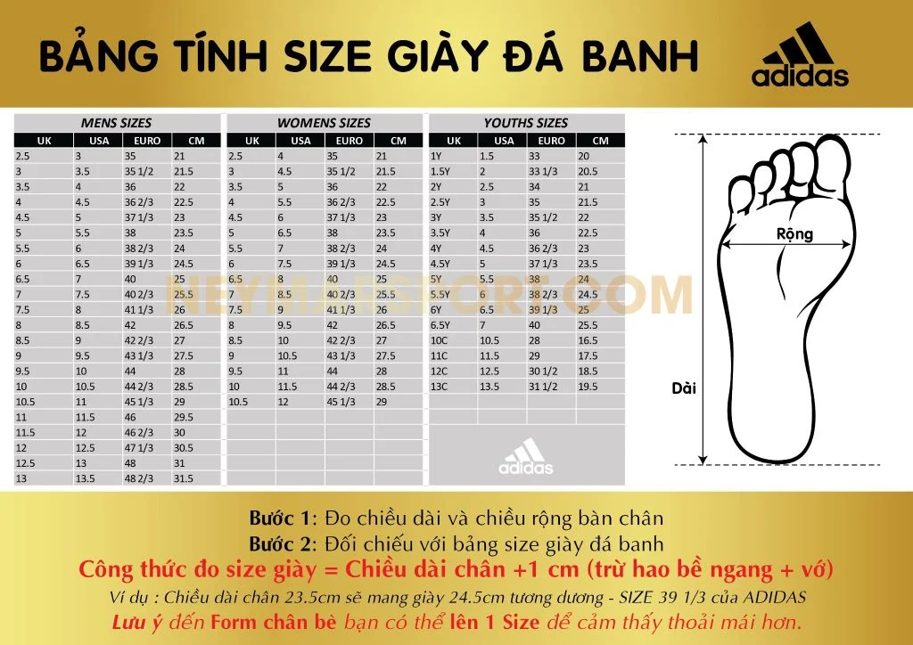

Hướng Dẫn Chi Tiết: Cách Đo Chân và Chọn Đúng Size Dép Adidas
Để chọn được một đôi dép Adidas phù hợp, việc đo chân chính xác là yếu tố quan trọng giúp bạn tránh được những sai sót trong việc lựa chọn size. Dưới đây là hướng dẫn chi tiết cách đo chân và chọn size dép Adidas phù hợp, giúp bạn có được đôi dép thoải mái và vừa vặn nhất.

1.1. Chuẩn bị dụng cụ đo
- Thước dây mềm: Giúp đo chiều dài và chiều rộng bàn chân chính xác.
- Giấy và bút: Vẽ hình chân và ghi lại số đo.
- Bút chì hoặc bút mực: Dùng để vẽ đường viền chân lên giấy.
- Gương: Hỗ trợ kiểm tra các vị trí khó nhìn khi đo.
1.2. Các bước đo chiều dài và chiều rộng bàn chân
Đo chiều dài chân: Đặt chân lên giấy, gót sát tường, vẽ đường viền và đo từ gót đến ngón dài nhất.
Đo chiều rộng chân: Dùng thước dây đo phần rộng nhất dưới các ngón chân.
Hãy đo cả hai chân và lấy số đo lớn hơn để chọn size phù hợp.
1.3. Cách chọn size dép dựa trên số đo
- So sánh số đo với bảng size: Dựa vào chiều dài bàn chân để tra bảng quy đổi size Adidas (cm, US, UK, EU).
- Chọn size phù hợp với loại dép: Mỗi loại dép Adidas có thể có độ chênh khác nhau về form.
- Kiểm tra độ rộng dép: Người chân rộng nên chọn dép có thiết kế form rộng.
1.4. Lưu ý khi đo chân tại nhà
- Đo vào cuối ngày khi chân có kích thước lớn nhất.
- Đo khi đang đứng để chân giãn nở tự nhiên.
- Chân nên sạch và khô ráo để đo chính xác.
- Đo cả hai chân, chọn size theo chân lớn hơn.
Bằng cách thực hiện đúng các bước đo chân trên, bạn sẽ dễ dàng chọn size dép Adidas chính xác và tránh được việc mua phải dép quá chật hoặc quá rộng. Hãy luôn kiểm tra kỹ bảng size của Adidas và so sánh với số đo của bạn để có được đôi dép vừa vặn, thoải mái cho mọi hoạt động.